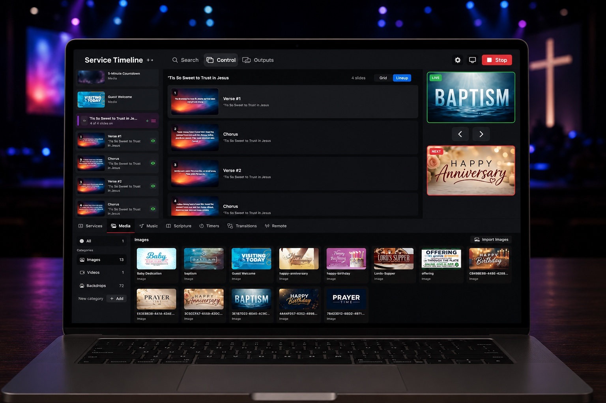
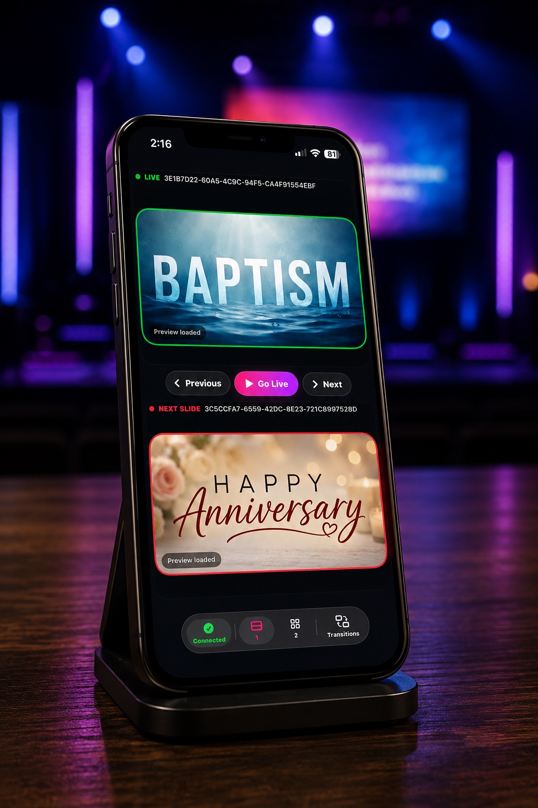
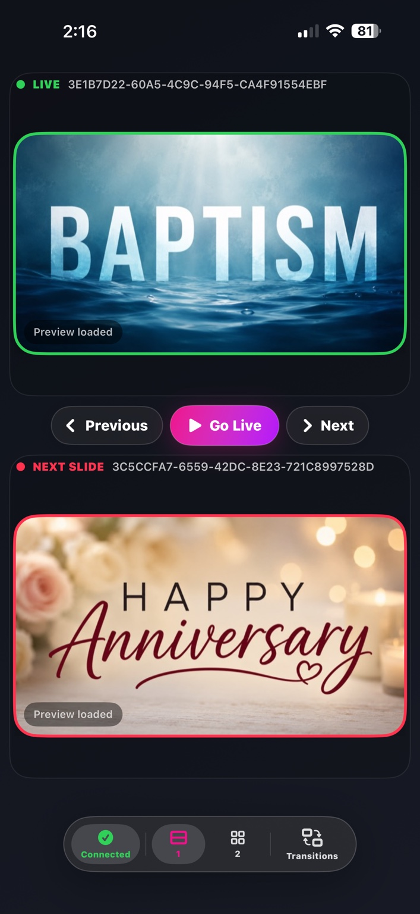
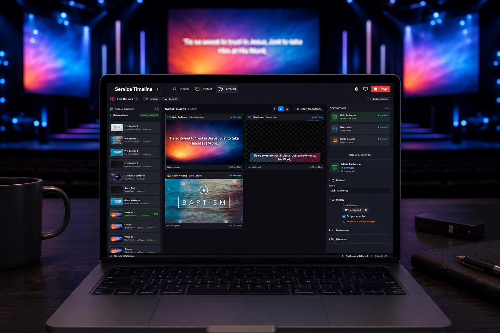

Everything you need to lead worship, beautifully.
Worship Now Studio brings service planning, lyrics, Scripture, media, live outputs, and remote control together in one focused presentation workspace.

Worship made simple.
Church presentation software doesn’t have to be complicated. Worship Now was built around one simple idea: worship made simple.
For some churches, one screen and a service timeline are all you need. For others, it’s a complete presentation setup with multiple outputs. Worship Now is designed to meet you where you are.
You decide how much you need. Keep it simple, or explore the advanced tools when you’re ready.
Start with the essentials.
Connect a display, choose your output, build your service, and go live. Use the tools you need without configuring a whole production setup.
Grow when you’re ready.
Simple doesn’t have to mean limited. Open Settings to enable the output tools, then customize destinations and add displays in Outputs. Build a setup that works for your church as your needs grow.
Step away from the computer.
With Worship Now Remote, control your presentation from your iPhone or iPad on the same Wi-Fi network as your Mac—without being tied to the computer.
Run the entire service from one clean timeline.
Build your service, select slides, preview what is live and what is coming next, and keep every media element within reach without cluttering the operator’s view.
Service Timeline
Organize songs, media, Scripture, timers, and service moments.
Live + Next
See exactly what the audience sees and what is queued next.
Media Library
Keep announcements, backdrops, videos, and graphics ready to send.
Fast Control
Move through slides quickly with an interface designed for live use.



Control the room without standing behind the Mac.
Keep Live and Next right in your hand. Move backward or forward, send the next item live, and stay connected to the presentation from iPhone or iPad.
Live Preview
Know what is currently being shown before you make a move.
Next Preview
Confirm the next slide or graphic before sending it live.
Previous / Next
Advance the service directly from the remote.
Transition Access
Keep essential live controls available from the mobile interface.
One presentation. Multiple destinations.
Manage audience display, livestream, and static graphic destinations from a dedicated output workspace with previews that make routing easy to understand.

Simple when you want it.
Powerful when you need it.
That’s Worship Now.